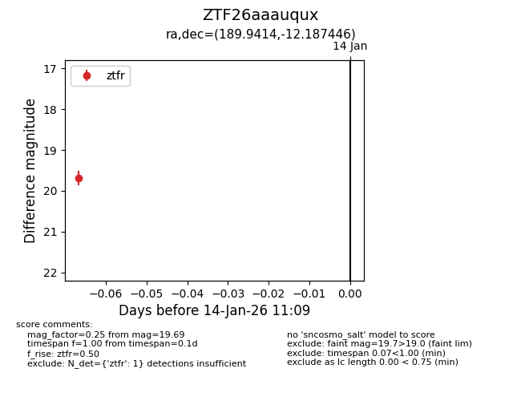
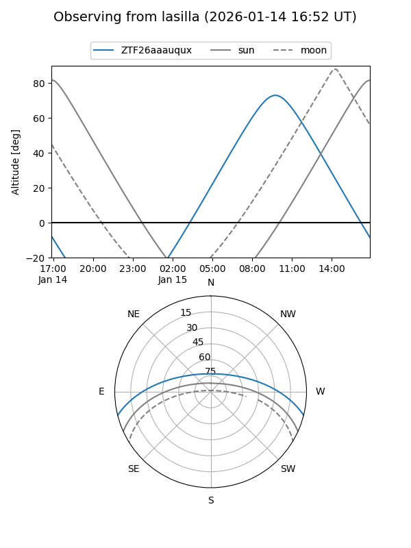
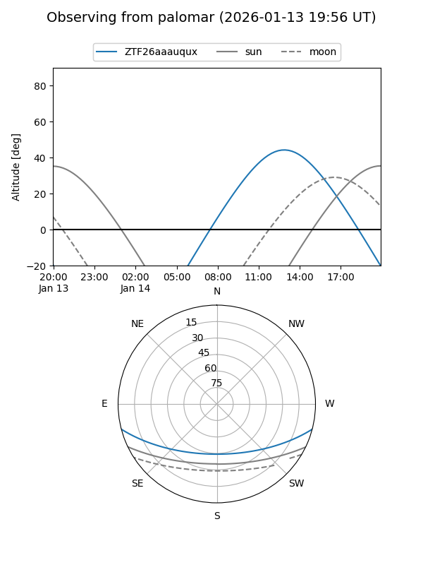

ZTF26aaauqux
Target ZTF26aaauqux at 2026-01-14 11:10
Aliases and brokers:
FINK: link
Lasair: link
ALeRCE: link
alt names
ZTF26aaauqux (ztf,fink_ztf)
Coordinates:
equatorial (ra, dec) = 189.9414,-12.18745
equatorial (HMS+DMS) = 12:39:45.94,-12:11:14.80
galactic (l, b) = (298.4372,+50.58241)
Flags:
Photometry:
last ztfr=19.69
1 ztfr detections
Lightcurve

Visibility


Additional plots